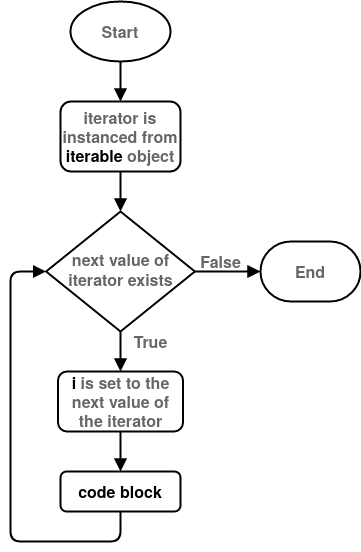

7.2 For Loops#
For loops can be used to repeat a block of code by iterating through specified values. Python for loops are technically “foreach” loops. Though the distinction is important in other programming languages, we will refer to these as “for” loops for the entirety of the book.
The syntax for a for loop is:
for i in iterable:
code block
As with the while loop, code indented after the : is inside the loop and will be executed with each loop iteration (here this code is represented by code block).
The iterable is an iterable object. These are objects that can be prompted to return a sequence of objects. Strings, lists and tuples are all examples of iterable objects.
When the loop is executed Python instances a new object from iterable called an iterator. The iterator is asked for the next object in the sequence before each loop iteration, until there isn’t a next object and control leaves the loop.
i is referred to as the iteration variable. It can be seen as a variable, and can be given any viable variable name. Before each loop iteration i is set to the next value of the iterator. This value can then be used in the code block by referring to i as a variable.
Note: be careful not to alter iterable inside the loop (code block), as this will cause an error.
The for loop can be illustrated using the control flow diagram:

Fig. 14 Control flow diagram of the for loop.#
Note that elements of Fig. 14 have been simplified.
Looping Through Sequences#
As mentioned, sequences such as tuples, lists and strings can also be used as iterables. For example, if we want to print the individual characters of a string separately:
for char in 'This string':
print(char)
T
h
i
s
s
t
r
i
n
g
Note that we called the iteration variable char. We can give it any name we want.
Similarly we can print each object in a list:
for item in [1, 2, 3, 'a', 'b', 'c']:
print(item)
1
2
3
a
b
c
The range() Function#
If you need to loop through a sequence of values that aren’t already in an instanced data collection, you can use the range() function. The range() function takes integer arguments and returns an iterable the produces a series of integers. As we shall see, the range() function’s arguments are very similar to slicing.
Range can be used with a single argument:
range(stop)
Here range() will produce a series of integers starting at zero and ending before the stop value. For example:
for i in range(5):
print(i)
0
1
2
3
4
If we were to use range with 2 arguments:
range(start, stop)
range() will produce a series of integers starting with the start value and ending with the stop value.
For example:
for i in range (2, 5):
print(i)
2
3
4
Lastly if we were to use range() with 3 arguments:
range(start, stop, step)
range() returns a series starting with the start value and with step sizes of step in between each value until it reaches the value before stop.
For example:
for i in range(2, 10, 3):
print(i)
2
5
8
The default value for step is 1. If you want the series to descend, you can use a negative step size:
for i in range(11, 3, -2):
print(i)
11
9
7
5
Useful Functions for Iterables#
enumerate() To Iterate Through Sequence and Index#
Sometimes you want to loop through a sequence but also want to keep track of the index. The most convenient way to do this is using the enumerate() function:
for i,char in enumerate('string'):
print(i, char)
0 s
1 t
2 r
3 i
4 n
5 g
where the iteration value is a tuple of the index and value from the original iterator (unpacked as i and char respectively).
Alternatively, the same can be achieved using the range function and indexing the iterable sequence manually:
string = 'string'
for i in range(len(string)):
print(i, string[i])
0 s
1 t
2 r
3 i
4 n
5 g
zip() To Iterate Through More Than One Sequence Simultaneously#
If you wanted to loop through more than one sequence at a time you can use the zip function:
for a,b in zip([1,2,3], ['a', 'b', 'c']):
print(a, b)
1 a
2 b
3 c
Note that the loop will only iterate as much as the shortest sequence.
This can also be achieved manually:
list_a = [1,2,3]
list_b = ['a', 'b', 'c']
for i in range(min(len(list_a), len(list_b))):
print(list_a[i], list_b[i])
1 a
2 b
3 c
Looping Through Dictionaries#
To loop through the key-value pairs of a dictionary you can use the dict.items() method:
d = {'a' : 54, 'b' : 754, 'c' : 42}
for k,v in d.items():
print(k, v)
a 54
b 754
c 42
You can also loop through only the keys:
for k in d.keys():
print(k, d[k])
a 54
b 754
c 42
or only the values:
for v in d.values():
print(v)
54
754
42
Note that the values returned from dictionary.values() won’t always appear in the same order. If this is a requirement it is better to use an ordered dictionary.
Using a while Loop in Place of a for Loop#
Although it’s not as clean, you can use while loops in place of for loops. We will not cover how to do this in general here , a simple example is using a while loop instead of a for loop with a range() iterable:
#For loop:
print('For loop')
for i in range(5):
print(i)
#Equivalent while loop:
print('')
print('While loop')
i = 0
while i < 5:
print(i)
i += 1
For loop
0
1
2
3
4
While loop
0
1
2
3
4